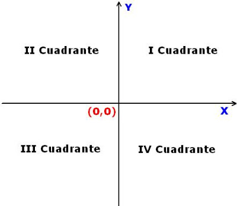

Programación 1 - Primer Parcial - Tema 2
(03-05-2018)
1 Para entregar en papel
(define (g a b c) (if (and b (< a 0)) (+ c 2) 1)) (define (h x y) (cond [(< x y) (* x y)] [(> x y) (+ x y)] [else (- x y)]))
Determine la signatura de cada función.
Escriba un caso de test (con la notación check-expect) para la función h.
Elija tres valores (a ,b ,c) compatibles con la signatura de g y evalúe paso a paso (con lápiz y papel) la expresión (g a b c).
Aclaración: Al decir compatibles queremos indicar que esos valores pertenecen al dominio de la función que determinó en el ítem 1.
2 Diseñando Funciones Simples
Guarde la solución en el archivo ejercicio2.rkt
Ejercicio 2. En este ejercicio utilizaremos la ubicación de puntos en el plano según el cuadrante que ocupan. Recordemos:

Diseñe una función clasificaCuadrante, que dadas las coordenadas x e y de un punto en el plano, devuelva "I", "II", "III", o "IV" dependiendo del cuadrante en el que se encuentre el punto. En caso que el punto se encuentre sobre los ejes coordenados, debe devolver "Ambiguo".
3 Diseñando Programas Interactivos
Modifique el archivo ejercicio3.rkt
Ejercicio 3. En este programa pretendemos simular el comportamiento de una mariposa. El programa comienza con el fondo vacío de color blanco.
El estado del sistema llevará un registro del tiempo de vuelo de la mariposa, que se incrementa con el paso del tiempo. El valor inicial será 0.
Extiende sus alas, si el tiempo de vuelo (estado) es impar y múltiplo de 5. Recuerde que la función modulo puede ayudarlo.
Pliega sus alas, en otro caso.
(define ALAS-PLEGADAS ) (define ALAS-EXTENDIDAS)
Diseñe un programa interactivo de acuerdo al siguiente comportamiento:
La función que responde a la cláusula to-draw dibuja la mariposa en la escena, ubicándola en una posición aleatoria dentro de la misma (la función random lo ayudará en este punto). Recuerde que debe dibujarla con las alas extendidas o plegadas, de acuerdo al valor del estado tal como se describe más arriba.
En cada tick del reloj, se incrementa en una unidad el tiempo de vuelo. En el archivo que se le pide modificar se ha definido 0.1 segundos como unidad de tiempo.
Si se presiona la flecha derecha entonces se aumenta en 10 unidades el tiempo de vuelo, y si se presiona la flecha izquierda se decrementa en 10 unidades el tiempo de vuelo. Cualquier otra tecla presionada no tendrá efecto alguno.
La mariposa dejará de volar, es decir que nuestra simulación finalizará, al superar el valor 200 de tiempo de vuelo.
Complete el diseño del programa interactivo que se le provee para que se comporte tal cual lo especificado anteriormete. Defina cualquier constante que considere necesaria. Recuerde los todos los pasos de la receta, y que el testing es importante! Si tiene dudas, consulte a los auxiliares.